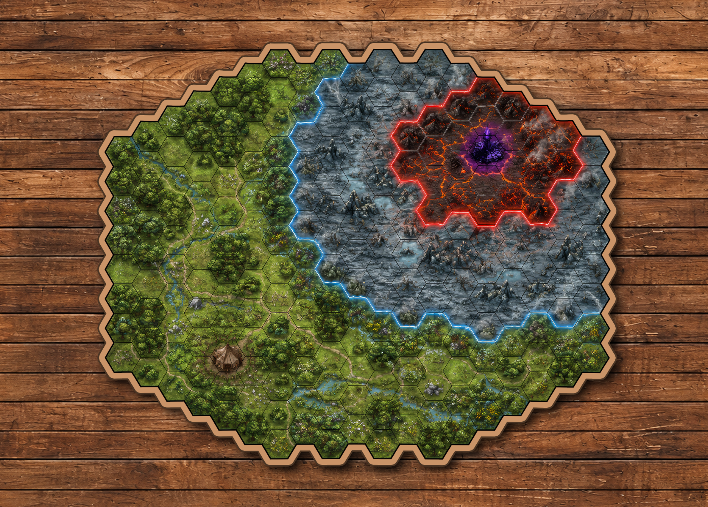

RPG DIGITAL PROTOTYPE · v0.6.91
Режим «Карта»
Планшет показывает общее игровое поле. Герой не выбирается, место игрока не занимается.
← К обычному входуЖдём начала партииКогда хозяин создаст игровое поле, карта появится автоматически.